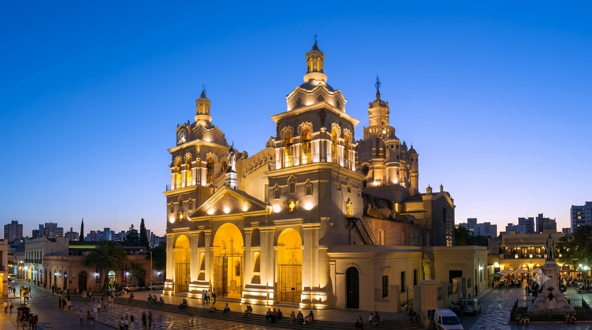

Iglesia Catedral de Córdoba
Ubicada frente a la Plaza San Martín, la Catedral de Nuestra Señora de la Asunción es uno de los monumentos históricos más importantes de la Argentina. Su arquitectura combina exquisitamente estilos barroco, neoclásico y renacentista.
Visitas guiadas de Lunes a Sábados